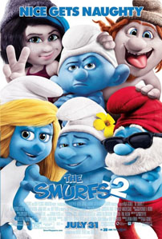

Review The Smurf 2
Minggu, 1 Desember 2013

Well… terlepas dari banyak kritikan yang menyudutkan kualitas penceritaan The Smurfs (2011), film animasi produksi Columbia Pictures tersebut berhasil memperoleh pendapatan komersial sebesar lebih dari US$563 juta dari masa peredarannya di seluruh dunia. Dan tentu saja, seperti layaknya yang terjadi pada hampir seluruh film sukses yang diproduksi oleh Hollywood, The Smurfs lantas mendapatkan imbalannya: sebuah sekuel! Kembali diarahkan oleh Raja Gosnell, The Smurfs 2 sebenarnya masih menawarkan sebuah formula cerita keluarga yang sepertinya benar-benar ditujukan agar dapat dengan mudah dikonsumsi oleh para penonton muda. Untungnya, tidak seperti The Smurfs yang terlihat bermalas-malasan dalam membangun ceritanya, The Smurfs 2 mampu tampil dengan ikatan cerita tentang ayah dan anak yang cukup kuat. Bukan sebuah perubahan yang drastis, namun jelas berhasil menunjukkan adanya sedikit peningkatan dalam kualitas performa penceritaannya.
The Smurfs 2 dimulai dengan pengisahan mengenai sang penyihir jahat, Gargamel (Hank Azaria), yang kini telah berhasil mencapai popularitas dunia sebagai seorang ahli magis yang paling dikagumi di Paris, Perancis – yang tentu saja berhasil dilakukannya karena dirinya memang dapat melakukan berbagai hal-hal magis tersebut. Namun, popularitasnya tersebut menjadi terancam setelah sumber kekuatan magisnya, sari tubuh Smurf, mulai berkurang. Di saat yang sama, percobaannya untuk menciptakan makhluk Smurf-nya sendiri, Vexy (Christina Ricci) dan Hackus (J. B. Smoove), ternyata tidak membuahkan hasil dan seringkali justru menyusahkan dirinya sendiri. Gargamel lalu menyusun rencana untuk menculik Smurfette (Katy Perry), salah satu Smurf ciptaannya yang kemudian berhasil diubah menjadi sesosok Smurf yang seutuhnya oleh Papa Smurf (Jonathan Winters), untuk mengetahui formula rahasia milik Papa Smurf.
Di saat yang sama, di desa Smurf, seluruh penduduk sedang menyusun sebuah pesta kejutan untuk merayakan ulang tahun Smurfette. Karena tidak mengetahui hal tersebut, dan merasa bahwa tidak ada seorangpun yang peduli pada ulang tahunnya, Smurfette kemudian memilih untuk mengasingkan diri ke hutan. Di saat itulah, Vexy dan Hackus yang dikirim oleh Gargamel berhasil menangkap Smurfette dan membawanya pada sang penyihir jahat. Sadar kalau nyawa Smurfette sedang berada dalam bahaya, Papa Smurf bersama dengan Gutsy Smurf (Alan Cumming), Clumsy Smurf (Anton Yelchin) dan Grouchy Smurf (George Lopez) kemudian segera berangkat ke New York, Amerika Serikat guna menemui pasangan Patrick (Neil Patrick Harris) dan Grace Winslow (Jayma Mays) untuk sekali lagi meminta bantuan mereka serta menyelamatkan Smurfette dari ancaman Gargamel.
Terlepas dari penggunaan komedi slapstick serta guyonan-guyonan khas yang masih mengikuti formula seri sebelumnya, jalan cerita sederhana (baca: klise) yang ditawarkan kepada penontonnya hingga penampilan Hank Azaria sebagai Gargamel yang masih sangat terasa mengganggu, The Smurfs 2 ternyata mampu tampil cukup memikat dengan tema pengisahan hubungan ayah dan anak yang tertera di sepanjang tubuh penceritaannya. Awalnya, tema tersebut terdapat dalam hubungan antara karakter Patrick Winslow dengan ayah tirinya, Victor Doyle (Brendan Gleeson – yang secara mengejutkan mau bermain dalam film sekelas The Smurfs 2!). Tema hubungan ayah dan anak itu kemudian tercermin kembali dalam hubungan antara Papa Smurf dengan Smurfette. Bukan sebuah pengisahan yang istimewa dan masih terasa kurang mendalam untuk menghasilkan sebuah sajian drama keluarga yang emosional namun Raja Gosnell secara mengejutkan mampu mengolah dua kisah tersebut untuk menjadi tulang punggung pengisahan The Smurfs 2 dan menjadikan film animasi ini tampil lebih berkesan dalam presentasi ceritanya.

Di saat yang bersamaan, kualitas penampilan akting serta olah vokal yang mumpuni dari jajaran departemen akting dan pengisi suara film ini juga tidak dapat disangkal memberikan kontribusi yang tidak sedikit pada kesuksesan penampilanThe Smurfs 2. Katy Perry jelas menjadi bintang utama film ini ketika ia berhasil mengeksekusi vokal karakter Smurfette yang menjadi tumpuan cerita utama The Smurfs 2 dengan meyakinkan. Jonathan Winters juga mampu memberikan kesan yang begitu bijaksana dalam vokal yang ia berikan pada karakter Papa Smurf. Penampilan akting dari Neil Patrick Harris, Jayma Mays dan Brendan Gleeson juga tidak mengecewakan, khususnya dengan ikatan chemistry yang mereka tampilkan di saat karakter-karakter yang mereka perankan tampil dalam adegan yang sama. Dan meskipun Hank Azaria (lagi-lagi) tampil berlebihan dalam memerankan karakter Gargamel, karakter kucingnya, Azrael yang diisisuarakan oleh Frank Welker, berhasil mencuri serta menambahkan esensi komedi pada setiap adegan yang melibatkan kehadiran dirinya.
Mungkin hal terbaik yang dapat disampaikan mengenai The Smurfs 2 adalah, tidak seperti pendahulunya, film animasi yang diadaptasi dari komik asal Belgia berjudul sama karya Peyo ini tidak lagi terasa begitu menyakitkan untuk disaksikan oleh para penonton dewasa. Naskah arahan lima (!) orang penulis naskah, J. David Stem, David N. Weiss, Jay Scherick, David Ronn dan Karey Kirkpatrick, memang tidak terasa istimewa, namun jelas berhasil menyajikan sebuah peningkatan yang cukup berarti. Pengarahan Raja Gosnell yang menghantarkan jalan cerita film dengan tempo yang cukup cepat serta pemilihan Paris, Perancis sebagai latar belakang cerita yang berhasil ditangkap oleh gambar-gambar indah arahan sinematografer Phil Meheux juga mampu memberikan momen-momen menyenangkan di sepanjang presentasi The Smurfs 2. The Smurfs 2 tidak akan memberikan lebih dari apapun ekspektasi yang telah diterapkan penonton ketika memilih untuk menyaksikan film ini. Namun, setidaknya, film ini tidak tampil seburuk seri sebelumnya. Dan hal itu jelas merupakan sebuah pencapaian yang cukup berarti bagi franchise yang khusus diperuntukkan bagi para penonton muda ini.